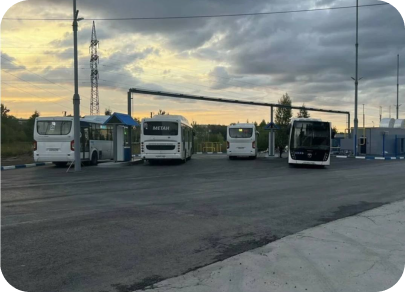
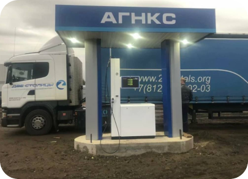
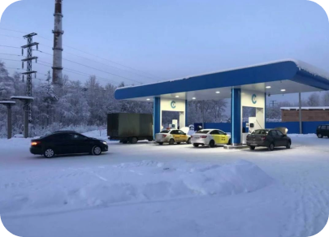
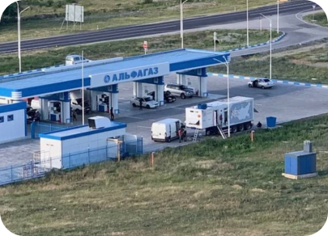
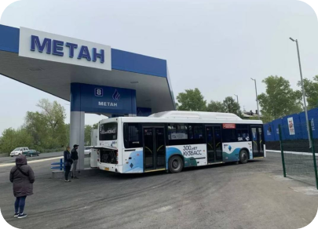
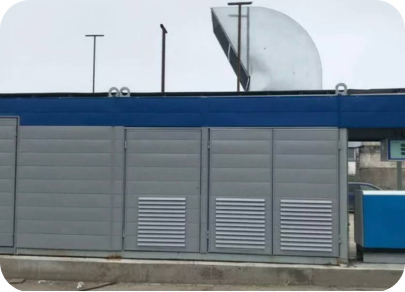
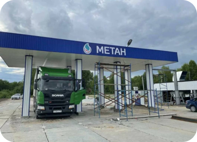
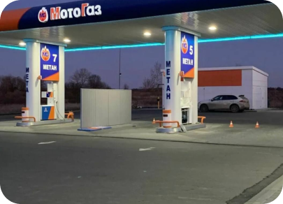

Преимущества
С помощью российских инженеров мы смогли добиться существенного снижения расходов электричества на производство 1 м3 газа. Так, мы убрали масляный насос от коленчатого вала, разработали новый тип теплообменника, убрали смазку с цилиндров. Все это было сделано с той целью, чтобы компрессор мог работать при температуре внешней среды от -50 градусов до +50 градусов. То есть, аналогично, компрессор запускается, и если через 15 секунд спустя, нет давления масла, то компрессор отключается. Техники понимают, что 15 секунд хватит, чтобы испортить вкладыши. У нас все работает по другому: на автоматику попадает сигнал запуска, сначала включается насос, даже если масло достаточно густое, 10-15 секунд достаточно, чтобы насос обеспечил давление масла в компрессор. Из компрессора на автоматику попадает сигнал, что давление масла в норме, после чего запускается компрессор. Мы практически экономии 10 кВт/час за счёт масла, за счет масляного насоса 1кВт.
АГНКС г. Новосибирск

Теплообменники аналогичного компрессора изготавливают вальцовкой. При температуре -50 +50градусов металл расширяется и начинает пропускать газ. Мы решали эту проблему. Российские конструкторы разработали другой тип теплообменников, с применением неразъемных соединений (сварки), и они при температуре -50+50 градусов работают штатно.
АГНКС г.Валдай

Легко можно доказать, почему убрали смазку на цилиндре. Газ из безсмазочногокомпрессора очень высокого качества, в нем отсутствует масло. Смазочные компрессоры расходуют в день до 5 литров масла. В месяц это 150 литров, а это около 80000-100000 рублей в месяц на дополнительные расходы.
АГНКС г. Соликамск

Аналогичные станции используют обогрев компрессорной, внутренний объем газораздаточной колонки. Это дополнительные расходы зимой около 150000-200000 рублей. Мы не используем обогреватели. Обсуждали это с инженерами и выбирали те материалы и комплектующие, которые работают при температуре +50 -50 градусов.
АГНКС г. Баксан

Мы производим установку осушку газа с регенерацией силикагеля (влагопоглощающего материала). Это позволяет продлить срок службы активного вещества до 600 циклов регенераций. Наша система АСУТП управляет не только компрессорами, но и целыми станциями, аналогов которой нет. Мы поставили перед собой задачу: производить качественное оборудование, которое поможет нашим клиентам значительно сэкономить денежные средства, исключив покупку запчастей и дополнительных аксессуаров.
АГНКС г. Кемерово

Для нас важным составляющим в работе, является качество продукции, а для покупателя - доступная цена и минимальные расходы. Для сравнения - аналогичный компрессор в РФ при входном давлении 1.2 мПа при 165 кВт двигателя производит 1000 м3/ч при 1000 оборотов в минуту. Наши компрессоры при 1.2 мПа на входе 132 кВт двигателя производят 1000 м3/ч 800 оборотов в минуту. Наши компрессоры при входном давлении 0.6 мПа 165 кВт производят 1000 м3/ч при 800 оборотов в минуту. Это благодаря тому, что мы сами делаем расчёт диаметра цилиндра, и самостоятельно их выпускаем.
Модульная АГНКС г. Тюмень

Главный принцип нашей работы: получить наибольшую производительность при минимальных оборотах. Благодаря этому, мы планово заменяем поршневые кольца каждые 6000 часов.
АГНКС г. ТОБОЛЬСК

АГНКС г. Курск
